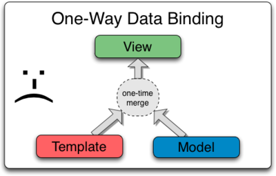

Angularjs for java developers
Mateusz Sobczak
Paweł Cierpiatka
JavaScript
JavaScript jest wszędzie
- jest w przeglądarce
- jest na serwerze
- działa jako język skryptowy
- nawet w JVM-ie można go wcisnąć
- jest bardziej funkcyjny niż java 8
na serwerze
- Rhino - od mozilli
- Nashorn - od oracle
- node.js - v8 z chrome
var http = require('http');
var server = http.createServer(
function (request, res) {
res.writeHead(200, {"Content-Type": "text/plain"});
res.end("Hello World\n");
});
server.listen(8000);
Funkcje, funkcje, funkcje
function filter(items, f) {
var j = 0;
var result = [];
for(var i in items){
if (f(items[i]) == true){
result[j++] = items[i];
};
}
return result;
}
var timelog = [{
"project" : 'idea',
"time" : 128
}, {
"project" : "efigence",
"time" : 283
}, {
"project" : "idea",
"time" : 338
}];
var efi = filter(timelog, function(item){
return item.project === "efigence";
});
Oczywiście podstawowe funkcje mamy już wbudowane
var total = timelog.reduce(function(start, log){
return start + log.time;
}, 0);
var byProject = timelog.reduce(function(sum, item){
if (sum[item.project] == undefined) {
sum[item.project] = 0;
}
sum[item.project]+=item.time;
return sum;
}, {});
i jeszcze na serwerze - npm
- taki trochę ant
- trochę w połączeniu z ivy
- w dodatku można nim zainstalować bowera, który robi to samo, tylko trochę inaczej :)
{
"version": "0.0.0",
"private": true,
"name": "timmee",
"devDependencies": {
"hapi": "^5.0.0"
},
"scripts": {
"prestart": "npm install",
"start": "node server.js"
}
}
AngularJS
AngularJS
- Produkt Google (Open source)
- Framework ???
- Silny podział na warstwy (MVW)
- Duży nacisk na testowalność
I hereby declare AngularJS to be MVW framework - Model-View-Whatever. Where Whatever stands for "whatever works for you".
Igor Minar
Długa i pokrętna ścieżka do oświecenia

Podstawy
expression
3 + 3 = {{3 + 3}}
JavaScript = {{'Java' + 'Script' }}
true === false is {{true === false}}
wybaczają -{{a.b.c}}-
3 + 3 = {{3 + 3}}
JavaScript = {{'Java' + 'Script' }}
true === false is {{true === false}}
wybaczają -{{a.b.c}}-
expression po co ?
łączy widok z modelem
$scope
- odnosi się do modelu aplikacji
- hierarchia jest podobna do hierarchi DOM
- udostępnia API $watch, $apply
- $watch pozwala obserwować zmiany modelu
- $apply pozwala informować o zmianach modelu
Troche teorii
Bez Angularjs
- event loop przeglądarki czeka na zdarzenie
- pojawia się zdarzenie (wpisujemy tekst)
- event callback jest wywoływany i JS modyfikuję DOM
- gdy callback jest wykonany przeglądarka wyświetla widok na podstawie DOM

Troche teorii
Angularjs
- własny flow reagowania na zmiany, który dzieli się na zdarzenia w kontekście Angular i poza
- pojawia się zdarzenie (wpisujemy tekst)
- odpalany jest $digest loop, który składa się z dwóch mniejszych pętli
- $evalAsync (co wykonać) i $watch (co zmienić)
- gdy pętla $digest jest zakończona przeglądarka wyświetla widok na podstawie zmienionego DOM
Data binding
$scope data-binding
two way data binding
- {{element}}
Dodaj element
- {{element}}
Two way data binding
znowu teoria
Tradycyjne podejście (?) |
AngularJS
|
$scope data-binding
two way data binding
- {{element}}
angular.module('ngApp', [])
.controller('ScopeController',['$scope',function($scope){
$scope.elements = ['pierwszy','drugi','trzeci'];
$scope.add = function(){
$scope.elements.push($scope.element);
$scope.element = "";
};
}]);
two way data binding pułapka
Root {{message}}
Pierwszy {{message}}
Drugi {{message}}
Root {{message}}
Pierwszy {{message}}
Drugi {{message}}
two way data binding pułapka
Root {{message}}
Pierwszy {{message}}
Drugi {{message}}
.controller('ScopeFirstController',['$scope', function($scope){
}])
.controller('ScopeThreeController',['$scope', function($scope){
}]);
two way data binding poprawny model
two way data binding pułapka
Root {{data.message}}
Pierwszy {{data.message}}
Drugi {{data.message}}
Root {{data.message}}
Pierwszy {{data.message}}
Drugi {{data.message}}
two way data binding poprawny model
Root {{message}}
Pierwszy {{message}}
Drugi {{message}}
.controller('ScopeFirstController',['$scope', function($scope){
}])
.controller('ScopeThreeController',['$scope', function($scope){
$scope.data = {message:"juz jestem"};
}]);
Serwisy
Service
Otrzymujemy nowy obiekt z którego możemy korzystać bezpośrednio w kontrolerze i w innych serwisach poprzez DI
Kontroler 1: Artysta:
.service('artistService', function(){
var artist = 'Manson'
this.getArtist = function(){
return artist;
}
this.setArtist = function(a){
artist = a;
console.log('New artist: ' + artist);
}
});
Factory
Funkcja tworzy i zwraca obiekt z którego możemy korzystać bezpośrednio w kontrolerach i w innych serwisach poprzez DI
.factory('artistService', function(){
var artist = 'Manson'
var service = {};
service.getArtist = function(){
return artist;
}
return service;
});
Provider
Najbardziej rozbudowany sposób definiowania serwisów. Publicznie (w kontrolerach i innych serwisach) dostępna jest tylko część providera
zwracana przez metodę "$get".
Provider jest też jedynym serwisem który przekazać do jako DI w konfiguracji aplikacji, czyli należy go użyć w sytuacji gdy chcemy skonfigurować serwis przed przekazaniem go do pozostałych modułów.
Provider
.provider('artistService', function(){
var artist = 'Manson'
this.$get = function(){
var that = this;
return {
getArtist: function(){
return that._artist;
}
}
}
});
app.config(function(artistService){
artistService.artist = ‘Marlin Manson’;
});
Wbudowane serwisy
- $animate
- $rootScope
- $exceptionHandler
- $http
- $q
- $timeout
- $window, $document
Moduły i DI
Moduły
"Kontener" umożliwiający grupowanie funkcjonalności
- określa w jaki sposób aplikacja ma być utworzona
- "reusability"
- decydujemy kiedy, który moduł wczytujemy
- testujemy tylko to co chcemy
- wymusza Low of Demeter
Moduły
przykład
var service = angular.module('myApp.service',[]);
service.factory('PersonService',['$http', function($http) {
...
}]);
var personCtrl = angular.module('myApp.controller',['myApp.service']);
personCtrl.controller('PersonCtrl',
['PersonService',function(PersonService) {
...
}]);
Moduły config/run
angular.module('myModule', []).
config(function(injectables) {
//kofiguracja stałych,
//własne providery (np data)
//routing, $http header, klucze, itp
}).
run(function(injectables) { // instance-injector
//umieszczamy rzeczy, które chcemy by
//działały w trakcie trwania aplikacji
//np spradzamy czy jest jakaś nowa aktualizacja z serwera
});
Dependecy Injection in AngularJS

$injector (service locator)
- jeden per aplikację
- odpowiedzialny za wyszukiwanie zależności
- odpowiedzialny za tworzenie zależności
- instancje trzymane są w cache
Bezpośrednie wstrzykiwanie
function MyController($scope, greeter) {
// ...
}
Przestaj działać po minifikacji.
Przez $injector
var MyController = function(renamed$scope, renamedGreeter) {
...
}
MyController['$inject'] = ['$scope', 'greeter'];
Rekomendowane
someModule.factory('greeter', ['$window', function(renamed$window) {
// ...
}]);
Routing
Routing
- angular-route
- przykład wyodrębnienia funkcjonalności do oddzielnego modułu
- /#/somepath
- ng-view
Routing ngView
<head>
...
</head>
body
...
</body>
ng-view jest dyrektywą, której zadanie jest prezentowanie odpowiedniej strony (szablonu)
Routing konfiguracja
var app = angular.module('app',['ngRoute']);
app.config(["$routeProvider",
function($routeProvider){
$routeProvider.when('/persons', {
templateUrl: 'partials/persons.html',
controller : 'PersonsCtrl'
});
$routeProvider.when('/persons/:personId', {
templateUrl: 'partials/person-details.html',
controller : 'PersonDetailsCtrl'
});
$routeProvider.otherwise({redirectTo:'/persons'});
}]);
Routing kontroler
var personCtrl = angular.module('controller',[]);
personCtrl.controller('PersonCtrl', function(){
...
});
personCtrl.controller('PersonDetailCtrl', ['$scope','$routeParams',
function($scope,$routeParams){
$scope.personId = $routeParams.personId;
...
}]);
Routing konfiguracja - resolver
app.config(["$routeProvider",
function($routeProvider){
$routeProvider.when('/quote',{
templateUrl: 'partials/quote.html',
controller : 'QuoteCtrl',
resolve : {
quotes : function(QuoteServices) {
return QuoteServices.quotes();
}});
//---controller
var quoteCtrl = angular.module('controller', []);
quoteCtrl.controller("QuoteCtrl",
['$scope', 'quotes', function ($scope, quotes) {
$scope.quotes = quotes.data;
}]);
Wbudowane serwisy - REST
REST
- $http
- $resources - jako oddzielny moduł ngResources
$http - GET
$http.get('/someUrl', [config]).
success(function(data, status, headers, config) {
//sukces
}).
error(function(data, status, headers, config) {
//smuteczek
});
$http - POST
$http.post('/someUrl', data, [config]).
success(function(data, status, headers, config) {
//sukces
}).
error(function(data, status, headers, config) {
//smuteczek
});
$http zwraca 'promise'
var promise = $http.get('/someUrl');
promise.then(
function(value) {
//sukces
},
function(error) {
//smuteczek
});
});
$http przykład
| Identyfikator | Nazwa |
| {{phone.id}} | {{phone.name}} |
$http przykład - kontroler
.controller('PhonesCtrl',['$scope','PhonesService',
function($scope, PhonesService){
PhonesService.getAll().then(function(result){
$scope.phones = result.data;
});
$scope.add = function(phone){
var phone = {id: phone.id, name:phone.name
, snippet:'timmeee'};
PhonesService.save(phone).then(function(result){
$scope.phones = result.data;
});
$scope.phone = {};}}])
$http przykład - serwis
.factory('PhonesService',['$http', function($http){
var phonesService = {};
phonesService.getAll = function(){
var promise = $http.get('/pathUrl');
return promise;
}
phonesService.save = function(phone) {
var promise = $http.post('/pathUrl', phone);
return promise;
}
return phonesService;}]);
$resources
- wraper na $http
- operacje al'a CRUD
- możliwość tworzenia własnych akcji
- długi REST'owy url /message/:listController:id/:docController
$resources - konfiguracja
var app = angular.module('someModule',['ngResources']);
app.factory('SomeService',['$resource', function($resource) {
var message = $resource('/message/:listController:id/:docController',{
id:"@id",
listController:"@listController",
docController: "@docController"
}
});
$resources - konfiguracja akcji
var message = $resource('/(...)/:listController:id/:docController',{
//parametry już są
},{
clear : {
method: "POST",
params : {listController:"do-your-magic"}
},
archive: {
method: "POST",
params: { docController:"archive" }
}}
message.clear();
message.query({id:1}) || message.query();
message.archive({id:1})
message.save(messageObject);
Filtry
Filtry
Służą do przetworzenia dancyh prezentowanych użytkownikowi
Tekst albo liczbę
możemy zaprezentować "{{msg | uppercase}}" użytkownikowilub sformatować {{numbermsg | number:2 | currency :'£'}}
możemy zaprezentować "{{msg | uppercase}}" użytkownikowi
lub sformatować {{numbermsg | number:2 | currency :'£'}}
Filtr do filtrowania
Szukaj:
- {{el}}
-
{{el}}
Własne filtry
Szukaj:
angular.module('ngApp').filter('len', function(/* miejsce na DI*/) {
return function(input, minlength) {
var input = input || Array();
return input.filter(function(el){
return (el.length >= minlength);
});
}})
Wbudowane filtry
- date (+format)
- number
- json
- lowercase / uppercase
- orderBy
- limitTo
Dyrektywy
Dyrektywy
"x-" i "data-" są wycinane z nazwy dyrektywy
":", "-", "_" są zamieniane na camelCase
"data-my:dir" zostanie z zamienione na dyrektywę "myDir"
Wbudowane dyrektywy
input - nadpisuje domyślne zachowanie tagu "input" dodając bindowanie do modelu
Wymagane!
Wbudowane dyrektywy
...
...
...
...
...
Własne dyrektywy
angular.module('ngApp').directive('myPhoneName', function() {
return {
template: 'Telefon: {{phone.name}} ({{phone.id}})'
};
});
templateUrl: 'my-customer.html'
Własne dyrektywy
restrict
angular.module('ngApp').directive('myPhoneName', function() {
return {
restrict: 'E',
template: 'Telefon: {{phone.name}} ({{phone.id}})'
};
});
Własne dyrektywy
izolacja scope-a
angular.module('ngApp').directive('myPhone', function() {
return {
scope: {
phoneInfo: '=phone'
},
template: 'Telefon: {{phoneInfo.name}} ({{phoneInfo.id}})'
};
});
Własne dyrektywy
angular.module('ngApp').directive('myPhone', function() {
return {
scope: {
phoneInfo: '=phone'
},
transclude: true,
template: 'Telefon: {{phoneInfo.name}} ({{phoneInfo.id}})'
};
});
Opcja transclude powinna być używana w dyrektywach, które opakowują inne elementy
My phone name is {{phone.name}}
Własne dyrektywy
manipulacja domem
.directive('myCurrentTime', ['$interval', 'dateFilter', function($interval, dateFilter) {
function link(scope, element, attrs) {
var format,
timeoutId;
function updateTime() {
element.text(dateFilter(new Date(), format));
}
scope.$watch(attrs.myCurrentTime, function(value) {
format = value;
updateTime();
});
element.on('$destroy', function() {
$interval.cancel(timeoutId);
});
// start the UI update process; save the timeoutId for canceling
timeoutId = $interval(function() {
updateTime(); // update DOM
}, 1000);
}
return {
link: link
};
}]);
Własne dyrektywy
zdarzenia
.directive('myDialog', function() {
return {
transclude: true,
scope: {
'close': '&onClose'
},
template: ''
};
});
Treść okienka
Własne dyrektywy
zagnieżdżanie dyrektyw
angular.module('docsTabsExample', [])
.directive('myTabs', function() {
return {
controller: function($scope) {
var panes = $scope.panes = [];
this.addPane = function(pane) {
if (panes.length === 0) {
$scope.select(pane);
}
panes.push(pane);
};
},
};
})
.directive('myPane', function() {
return {
require: '^myTabs',
link: function(scope, element, attrs, tabsCtrl) {
tabsCtrl.addPane(scope);
},
templateUrl: 'my-pane.html'
};
});